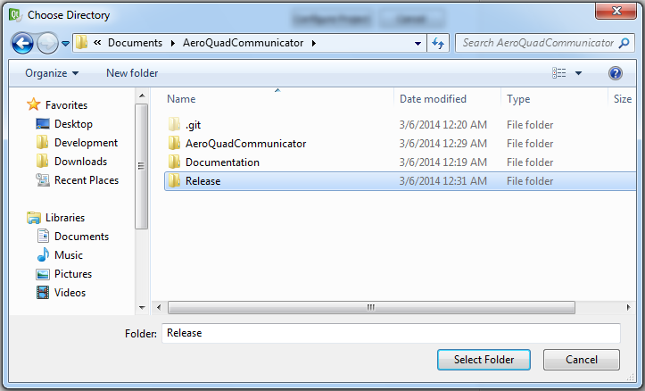
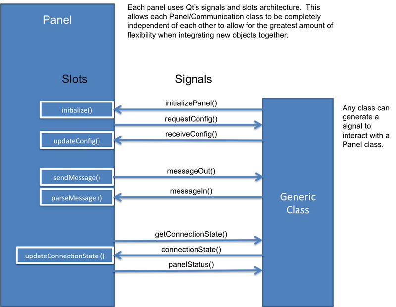
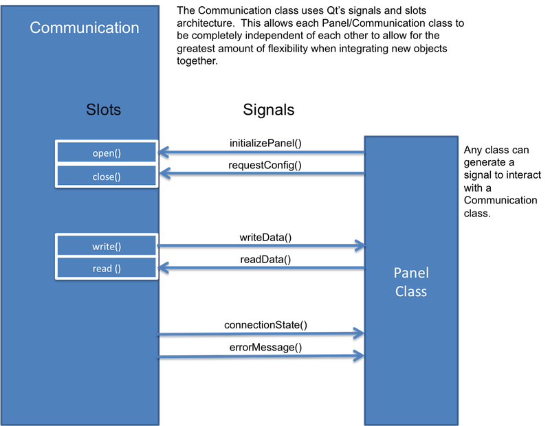

Installation
- Download the source code from GitHub: https://github.com/Carancho/AeroQuadCommunicator.git
- Install Qt (Source originally compiled with v5.2): http://qt-project.org/downloads
- Open the AeroQuadCommunicator.pro project file.
- Qt will ask you to configure your project.
- Deselect the Debug checkbox
- Select Browse for the Release folder, create a new folder called "Release", then choose the Select Folder button

- Select Configure Project
- Copy the following files into the new "Release" folder you just created
- These files are found under ./AeroQuadCommunicator/AeroQuadCommunicator
- panel_config.xml
- panel_plot.xml
- panel_route.xml
- position.png
- InitialRoute.xml
- Extract the data.zip file found under ./AeroQuadCommunicator/marble into ./AeroQuadCommunicator/Release/data
- Create another folder in ./AeroQuadCommunicator/Release/Release and place libmarblewidget.dll inside
- libmarblewidget.dll is found inside ./AeroQuadCommunicator/marble
- Click the Run button to build and run the Communicator
Software Requirements
Communicator Requirements:
- The Communicator shall display flight board configuration.
- The Communicator shall modify and store user configurable options.
- The Communicator shall plot telemetry values as streamed from serial commununication.
- The Communicator shall upload firmware to the AQ board.
- The Communicator shall provide a Serial Monitor for troubleshooting.
- The Communicator shall command motors individually for checkout.
- The Communicator shall provide a means to calibrate onboard sensors, transmitter stick positions and ESC's.
- The Communicator shall provide an autopilot configuration tool.
Design
High Level Architecture Diagram
This describes at a high level how each of the main components of the Communicator interact with each other.
Panel Class Diagram
These are the main slots and signals of a Panel class.

Communication Class Diagram
These are the main slots and signals of the Communication class

Communication Sequence Diagram
Insert block diagram here.
How to Add New Panels
- Use Qt Designer to create a new widget
- In the Projects pane, right click on the AeroQuadCommunicator project and select "Add new.."
- In the Add New dialog box, select Qt->Qt Designer Form Class and press "Choose.."
- Under templates/forms select widget and press "Next"
- Enter a name for the class you wish to create. The naming convention is to call it PanelName (replace Name with the unique name you want to call your class).
- The name of the .cpp, .h and .ui file will be auto generated as panelname.x. For our naming convention, place an underscore between panel and the name (panel_name.cpp).
- For the path, create a new subfolder under the panel folder and select "Next"
- The new files will now appear under Headers, Sources and Forms in the Projects pane.
- Update the newly created .h and .cpp files with required class properties and methods. You can also look at panel_example.h and panel_example.cpp for an example in code.
- Insert the following code into the new .h file:
#include <QMap>
public:
bool connectState;
QMap<QString, QString> configuration;
void sendMessage(QString message) {emit messageOut(message.toUtf8());}
public slots:
void initialize(QMap<QString, QString> config);
void updateConnectionState(bool state) {connectState = state;}
void parseMessage(QByteArray);
signals:
void initializePanel(QMap<QString, QString>);
void messageIn(QByteArray);
void messageOut(QByteArray);
void panelStatus(QString);
void connectionState(bool);
void getConnectionState();
- Insert the following code into the new .cpp's constructor:
connect(this, SIGNAL(initializePanel(QMap<QString,QString>)), this, SLOT(initialize(QMap<QString,QString>)));
connect(this, SIGNAL(messageIn(QByteArray)), this, SLOT(parseMessage(QByteArray)));
connect(this, SIGNAL(connectionState(bool)), this, SLOT(updateConnectionState(bool)));
- Insert the following code at the bottom of the panel's .cpp file:
void ReplaceWithPanelClassName::initialize(QMap<QString, QString> config)
{
configuration = config;
emit getConnectionState();
}
void ReplaceWithPanelClassName::parseMessage(QByteArray data)
{
QString incomingMessage = data;
ui->exampleResponse->setText(incomingMessage);
}
- Update communicator.cpp to use new widget
- Include your custom panel's header file at the top of communicator.cpp
- Update Communicator::initToolBar(), this adds a new menu icon in the tool bar
- To add a graphical icon, you will need to add the graphics to the resources file: communicator.qrc
- Edit communicator.ui by adding a new Action in the Action Editor
- Define the Object Name, use this to add a new connect() statement in Communicator::initToolBar()
- When defining signalMapper->setMapping(), choose a string to refer to your new panel
- Update Communicator::loadPanel()
- Use the string you defined from step 3B to call your new panel:
else if (panelName == "Test")
.png)

 1.8.6
1.8.6